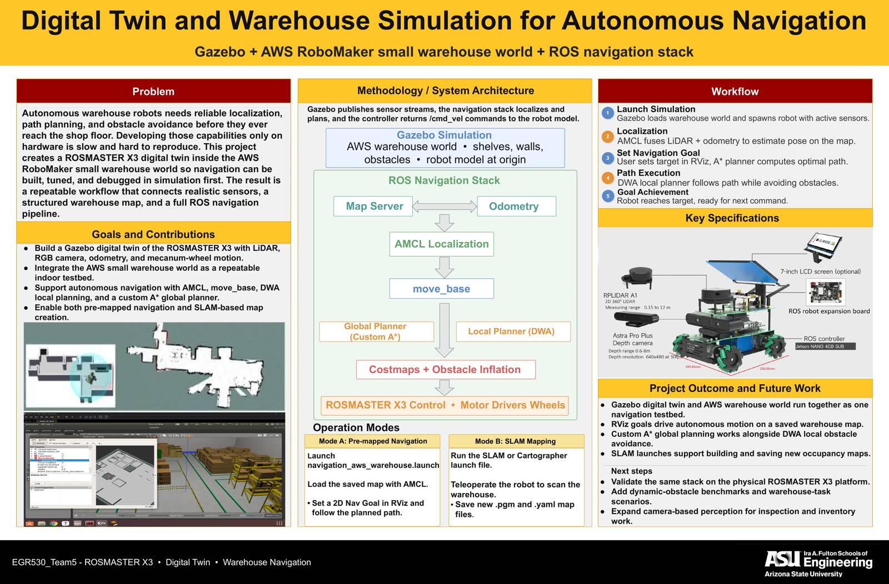
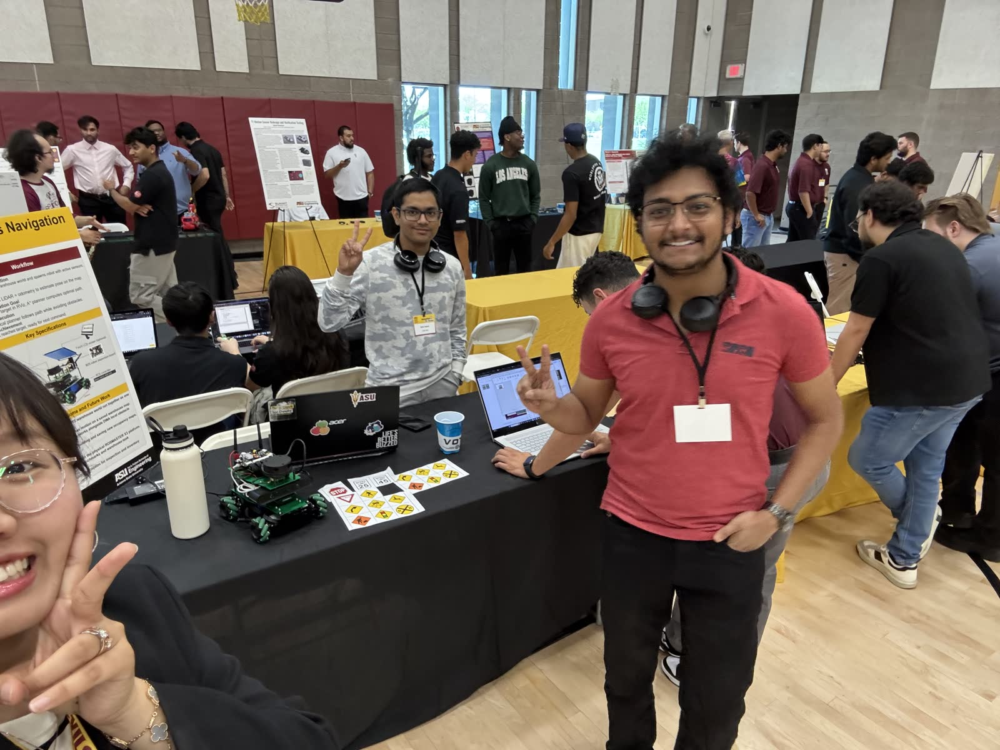
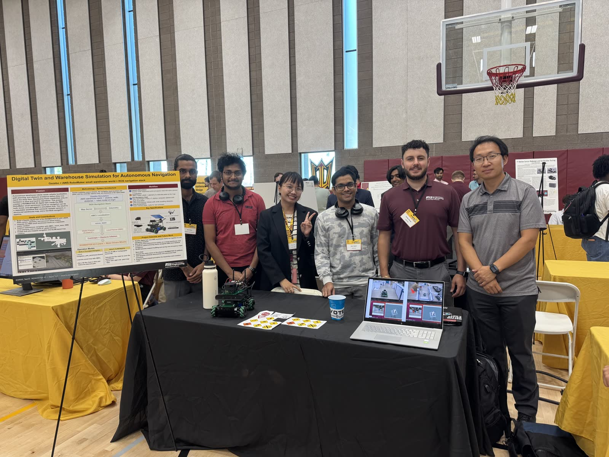

A Warehouse That Only Exists in Gazebo, Driven by a Robot That Doesn't Know the Difference
Our team built a full autonomous navigation stack for the ROSMASTER X3, a rover on mecanum wheels, inside a digital copy of the AWS RoboMaker small warehouse. It has a URDF model of the robot with a simulated 2D LiDAR and RGB camera, AMCL particle filter localization, a custom A* global planner we wrote to feed move_base, DWA for dodging obstacles over layered costmaps, and SLAM through gmapping or Cartographer to build the map to begin with. On top of that, it reads colored markers, stopping for red and slowing down for yellow.
First model the robot, then the building around it.
The project comes as two ROS packages that slot into an existing yahboomcar workspace. aws-robomaker-small-warehouse-world is the environment, a Gazebo world with shelves, walls and more than 20 3D warehouse objects. It gave us a testbed we could rerun the same navigation in again and again until the numbers actually meant something. digital_twin_description is the other half: the ROSMASTER X3 URDF with its 360° planar LiDAR and RGB camera, the navigation launch files, our A* planner and the prebuilt warehouse map.
The X3 rolls on mecanum wheels, and that matters more than it sounds. It can slide sideways without turning, so the planner isn't stuck with the curved paths of a differential drive when it squeezes a 24 cm robot between shelf legs.
| Platform | Value |
|---|---|
| Footprint | 24 cm × 24 cm |
| Max linear speed | 0.3 m/s |
| Max lateral speed | 0.2 m/s (mecanum) |
| Max angular speed | 1.0 rad/s |
| Payload | 10 kg |
| Sensor | Spec |
|---|---|
| LiDAR type | 2D planar scanner, 360° FOV |
| LiDAR range | 0.35 to 12 m @ 10 Hz |
| Camera | 640 × 480 · 30 FPS · 62° FOV |
The twin copies the real hardware part for part: an RPLIDAR A1 2D 360° scanner, an Astra Pro Plus depth camera (0.6 to 8 m range, 640×480 @ 30 FPS), a Jetson Nano 4GB running the ROS controller on a robot expansion board, and an optional 7-inch LCD. That's why testing on the physical X3 next will be a port and not a rewrite.
move_base sits in the middle and everything else feeds it.
It's the classic ROS navigation pipeline with one piece replaced by code we wrote ourselves.
AMCL uses a particle filter to combine /scan with the wheel
/odom and keep the robot located on the static /map.
move_base takes a goal, a 2D Nav Goal click in RViz, and runs the two
planning layers. Our custom A* global planner searches the whole warehouse
for a route, and DWA tries out local velocity commands every cycle to follow
it while avoiding anything the map didn't know about. What comes out the bottom is
/cmd_vel.
goal into move_base, then A* global makes the plan, then DWA local sends /cmd_vel
costmaps: global 1 Hz full map · local 5 Hz 6 × 6 m rolling window
The two costmaps update at different rates on purpose, because they answer different questions. The global one asks "is there a way through at all?" once a second across the whole map, with the obstacle padding already included. The local one asks "what's about to hit me?" five times a second inside a 6 × 6 m window around the robot. Padding every obstacle by 25 cm is what stops a 24 cm robot from clipping a shelf corner it technically had room to pass.
| Navigation parameter | Value |
|---|---|
| Safety inflation radius | 0.25 m |
| Obstacle detection range | 3.5 m |
| Goal position tolerance | 0.15 m |
| Goal angle tolerance | 15° |
| Global costmap update | 1 Hz · full map |
| Local costmap update | 5 Hz · 6 m × 6 m |
To tune it, raise inflation_radius in costmap_common_params.yaml from 0.25 to 0.35 for more clearance, or lower the max velocities in dwa_local_planner_params.yaml for a more careful robot.
Two ways to learn a building you've never seen.
The robot normally navigates on a map it already has, but that map has to come from
somewhere. The stack supports gmapping, which is particle filter SLAM, and
Google Cartographer, which is the one we recommend, both running in the
same warehouse world. You drive the robot around by hand with
teleop_twist_keyboard until the occupancy grid fills in, then save the map
as .pgm and .yaml with map_saver. Cartographer has one
step that isn't obvious. You have to finish the trajectory (/finish_trajectory 0)
before saving, or the final optimization never runs.
$ rosservice call /finish_trajectory 0 let the loop closures settle first
$ rosrun map_server map_saver -f my_custom_map
$ roslaunch digital_twin_description navigation_aws_warehouse.launch RViz opens on the saved map, ready for goals
A warehouse robot that reads the signs.
Navigation gets a robot to a spot. Working in a warehouse full of other people and machines takes more than that, so the camera feed drives sign recognition from colored markers on top of move_base. A red stop marker halts navigation until the way is clear, and a yellow warning marker puts the robot into a careful, slower mode while it looks for hazards. The rule we showed is the one that matters in real operation: what the robot sees can overrule the planner, never the other way round.
What the twin actually achieved.
The robot reached its goal in more than 95% of simulated runs, stopping within ±15 cm and ±15° of where it was sent. That's close enough for work right next to shelves, and it's exactly the tolerance we set the goal checker to enforce. Localization held at 10 Hz, planning ran at 5 Hz, and DWA got around the obstacles we threw in without anyone having to step in.
| Metric | Result |
|---|---|
| Navigation accuracy | ±15 cm, ±15° |
| Goal success rate | 95%+ in simulation |
| Obstacle detection range | 0.35 to 12 m (LiDAR) |
| Maximum speed | 0.3 m/s linear · 0.2 m/s lateral |
| Localization update rate | 10 Hz |
| Path planning frequency | 5 Hz |
As reported on our team project site, where the results page was last updated May 1, 2026.



What I took away from it.
A digital twin is a measuring tool first and a demo second. The point of the AWS warehouse world isn't that it looks like a warehouse. It's that you can send the robot to the same goal a hundred times under identical conditions, and that's the only way "95% success" becomes a real number instead of a feeling. Writing the global planner yourself also changes how well you understand the stack. Plugging our own A* into move_base meant the costmap, the inflation layer and the handoff from plan to controller stopped being settings and became code we had to get right. And the layers should work at different speeds. A 1 Hz global route next to a 5 Hz local reaction isn't doubling up. It splits "where should I go" from "what's in my way right now" on purpose.
Where our team wants to take it next: testing the full stack on the physical X3, coordinating a fleet of several robots, better camera-based perception for warehouse jobs, and benchmarking in a real building instead of a modeled one.